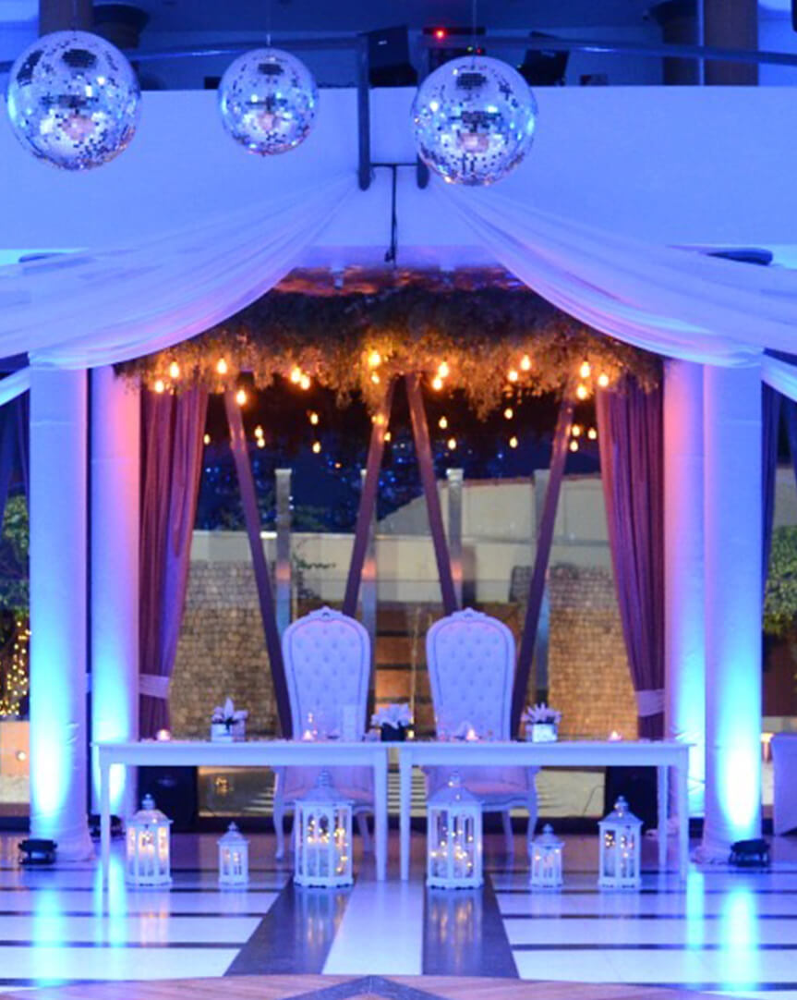

Una hectárea de parque con árboles centenarios y
exótica vegetación, es el escenario de Rincón de Pilar,
un lugar donde la naturaleza y la arquitectura se combinan creando un ambiente calido y moderno.
Ubicado a solo 30 minutos de la Capital Federal, y con un acceso privilegiado, se llega al predio,
a través de un camino de 400mts desde la salida de la Autopista Panamericana km. 47.5 (Ramal Pilar).
Nuestro salón de 650m2, ofrece la posibilidad de ser dividido en ambientes más pequeños
permitiendo recibir hasta 600 personas en formato cena y 1200 personas para disfrutar un exquisito cocktail.
Distinguidos detalles y diseño exclusivo hacen de Rincón de Pilar la mejor opción para realizar su evento
en un salón de calidad singular y entorno acogedor.
